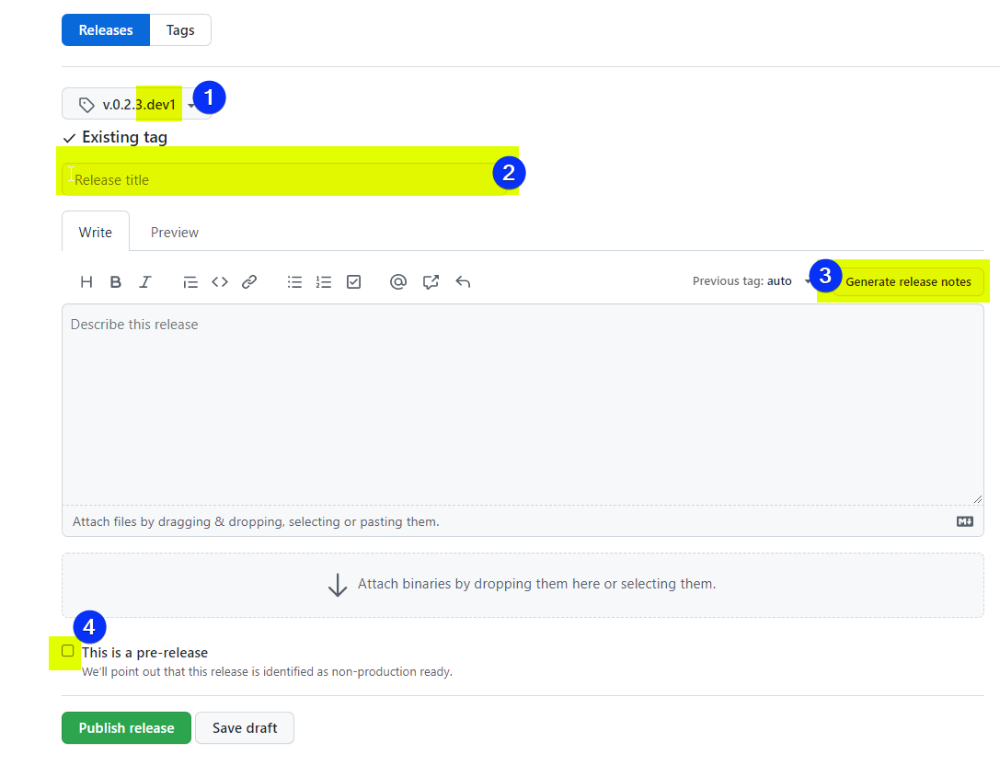
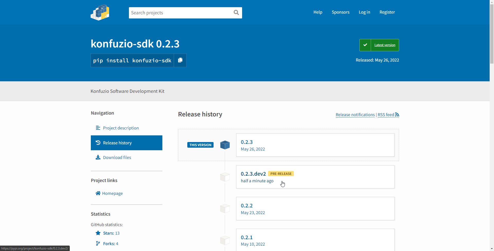

Internal release process¶
Every day at 5:19 AM UTC (3:19 AM UTC+2, see code here) a new nightly release of the SDK (master branch) is released to https://pypi.org/project/konfuzio-sdk/#history.
Every day at 6:13 AM UTC a new nightly release of the Server using the latest nightly SDK is deployed at https://testing.konfuzio.com/ as a Gitlab schedule from our Server repository.
We get an early chance to find bugs with our integration of the SDK with the Konfuzio Server before the official release. During our internal development sprints (2 week periods) we follow the strategy summarized in the table below.
Key |
Meaning |
|---|---|
T |
Testing Time |
M |
Merge to next level |
R |
Release |
B |
Bug Fixing |
Release |
1 |
2 |
3 |
4 |
5 |
6 |
7 |
8 |
9 |
10 |
|
|---|---|---|---|---|---|---|---|---|---|---|---|
Server |
master Branch Server |
M |
|||||||||
Server |
testing Branch Server |
T |
B |
B |
R |
||||||
Server |
nightly Build SDK |
T |
B |
B |
R |
||||||
SDK |
master Branch |
T |
T |
B |
B |
R |
|||||
SDK |
Pull Request |
M |
|||||||||
DVUI |
master Branch |
T |
T |
B |
B |
R |
|||||
DVUI |
Pull Request |
M |
– |
The strategy follows a 2 weeks sprint schedule (10 work days). The SDK process is described in the following plan. The process with DVUI is completely analogous:
On the first week we do development on the SDK / Server / DVUI side, and we open one pull request for each new SDK feature on Github (see the list of currently open SDK pull requests here).
On the Monday of the second week we merge pull requests to master, which triggers the creation of a SDK nightly release. This becomes available as a Konfuzio Server deployment the next day at https://testing.konfuzio.com/, as a consequence of a Konfuzio Server Gitlab schedule.
We internally test the Konfuzio SDK/Server integration with the nightly deployment and collect any bugs that come up, either from the SDK side or the Server side. For the SDK side, these are scheduled as internal tickets for fixing until Friday, which marks the end of the sprint.
On Friday the bug fixing is over, the associated pull requests are merged to master and a new SDK official release is created containing the new features and bugfixes.
SDK Release Notes are automatically generated from our pull requests using the Github’s feature. Each pull request includes links to relevant documentation about how to use the new feature, see for example https://github.com/konfuzio-ai/konfuzio-sdk/pull/124.
The new SDK features are available on Friday evening at the end of each sprint. As we internally test and integrated the Konfuzio Server with each nightly SDK release, a new Server release is also available at app.konfuzio.com on the same Friday evening. See the changelog for full information about each Konfuzio Server release.
How to release with GitHub to PyPI¶
Change the version number in the file VERSION use the format
v.X.X.Xwithout whitespaces.
Draft a Release here.
Create a new Tag on master, named as the version number in step 1.
Add a title for the release
Automatically generate the description using the Names of the merged Pull Requests
After you press publish release, a new Python Package will be uploaded to PyPI by a GitHub Action, see code here. You can verify that the Release was uploaded via having a look on PyPI

{kind=link}
How to use nightly builds?¶
Install the latest pre-release
pip install --pre konfuzio_sdkForce to pick the latest pre-release the version
pip install konfuzio_sdk>=0.2.3.dev0. As PEP440 states: The developmental release segment consists of the string .dev, followed by a non-negative integer value.
Developmental releases are ordered by their numerical component, immediately before the corresponding release (and before any pre-releases with the same release segment), and following any previous release (including any
post-releases)
Note
Pre-Releases don’t use tags but reference commits. The version number of a pre-release relates to the Year-Month-Date-Hour-Minute-Second of last commit date on branch master used to create this release. This process allows publish a new package if there are new commits on the master branch.